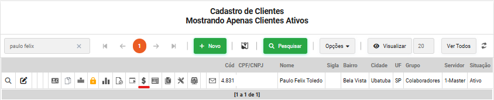
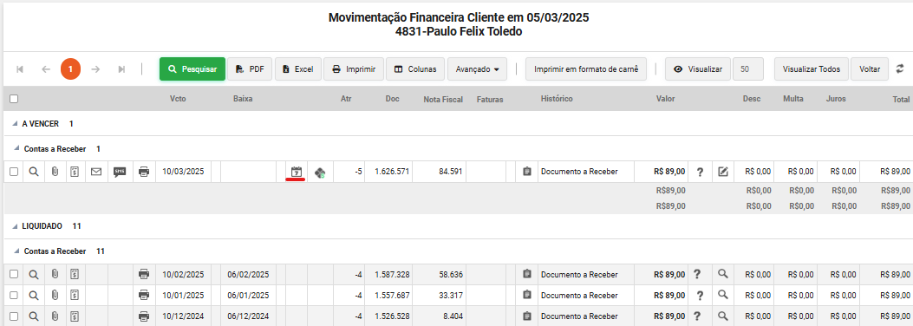
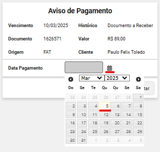
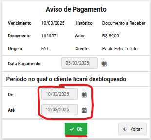

Bloqueio - CAT | TrixNet
1. Mensagem de informe de bloqueio ao assinante.
2. Mensagem após envio do comprovante e verificação do mesmo.
3. Após verificação realizar o informe de pagamento.
3.1 Clicar em posição financeira
3.2 Fazer o informe do pagamento do boleto que o assinante realizou, clique em informe de pagamento.
3.3 Selecione a Data Pagamento, no dia que o assinante realizou o pagamento.
3.4 Selecione o Período no qual o cliente ficará desbloqueado até a compensação bancaria (por padrão 2 dias).
3.5 Só clicar em OK, que o informe será realizado.